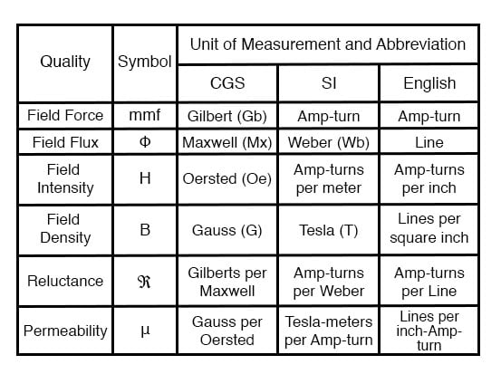
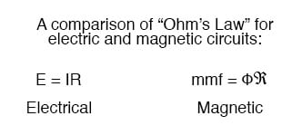
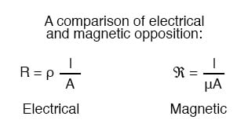

If the burden of two systems of measurement for common quantities (English vs. metric) throws your mind into confusion, this is not the place for you! Due to an early lack of standardization in the science of magnetism, we have been plagued with no less than three complete systems of measurement for magnetic quantities.
First, we need to become acquainted with the various quantities associated with magnetism. There are quite a few more quantities to be dealt with in magnetic systems than for electrical systems. With electricity, the basic quantities are Voltage (E), Current (I), Resistance (R), and Power (P).
The first three are related to one another by Ohm’s Law (E=IR ; I=E/R ; R=E/I), while Power is related to voltage, current, and resistance by Joule’s Law (P=IE ; P=I2R ; P=E2/R).
With magnetism, we have the following quantities to deal with:
Magnetomotive Force—The quantity of magnetic field force, or “push.” Analogous to electric voltage (electromotive force).
Field Flux—The quantity of total field effect, or “substance” of the field. Analogous to electric current.
Field Intensity—The amount of field force (mmf) distributed over the length of the electromagnet. Sometimes referred to as Magnetizing Force.
Flux Density—The amount of magnetic field flux concentrated in a given area.
Reluctance—The opposition to magnetic field flux through a given volume of space or material. Analogous to electrical resistance.
Permeability—The specific measure of a material’s acceptance of magnetic flux, analogous to the specific resistance of a conductive material (ρ), except inverse (greater permeability means easier passage of magnetic flux, whereas greater specific resistance means more difficult passage of electric current).
But wait . . . the fun is just beginning! Not only do we have more quantities to keep track of with magnetism than with electricity, but we have several different systems of unit measurement for each of these quantities. As with common quantities of length, weight, volume, and temperature, we have both English and metric systems. However, there is actually more than one metric system of units, and multiple metric systems are used in magnetic field measurements!
One is called the cgs, which stands for Centimeter-Gram-Second, denoting the root measures upon which the whole system is based. The other was originally known as the mks system, which stood for Meter-Kilogram-Second, which was later revised into another system, called rmks, standing for Rationalized Meter-Kilogram-Second. This ended up being adopted as an international standard and renamed SI (Systeme International).

And yes, the µ symbol is really the same as the metric prefix “micro.” I find this especially confusing, using the exact same alphabetical character to symbolize both a specific quantity and a general metric prefix!
As you might have guessed already, the relationship between field force, field flux, and reluctance is much the same as that between the electrical quantities of electromotive force (E), current (I), and resistance (R). This provides something akin to an Ohm’s Law for magnetic circuits:

And, given that permeability is inversely analogous to specific resistance, the equation for finding the reluctance of a magnetic material is very similar to that for finding the resistance of a conductor:

In either case, a longer piece of material provides a greater opposition, all other factors being equal. Also, a larger cross-sectional area makes for less opposition, all other factors being equal.
The major caveat here is that the reluctance of a material to magnetic flux actually changes with the concentration of flux going through it. This makes the “Ohm’s Law” for magnetic circuits nonlinear and far more difficult to work with than the electrical version of Ohm’s Law. It would be analogous to having a resistor that changed resistance as the current through it varied (a circuit composed of varistors instead of resistors).